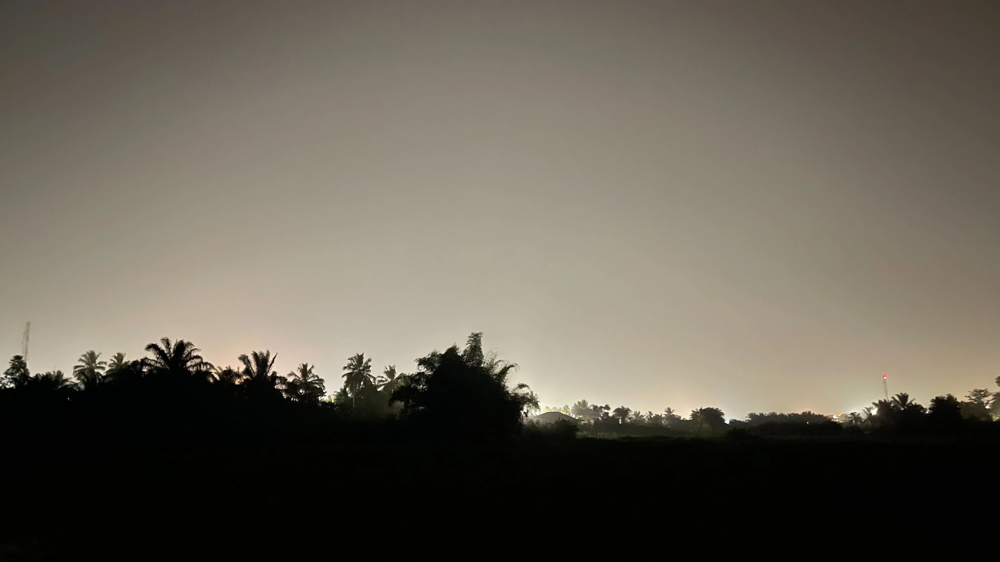

Benjamin
Benjamin Akorli Junior
FRONTEND DEVELOPER
Hi, I'm Benjamin, born in Akim Oda, Ghana. I have been coding for a
year now. As a junior software engineer, I'm specializing in
full-stack web development and UI/UX design.
When I'm not at my desk, I am probably watching movies, playing
football, reading a book, or watching Youtube.
001— PHOTOGRAPHY
Well... I love photography very much. These are just some few pictures from my gallery. Enjoy :)

